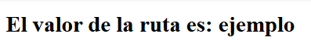
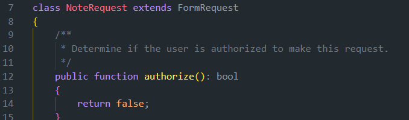

5. CRUD
1. Introducción
✅ Marcas De Tiempo
0:00:00 - Introducción 0:00:40 - Rutas Con Parámetros 0:23:25 - Crud Parte I 0:33:52 - Crud Parte Ii 1:03:46 - Crud Parte Iii 1:31:25 - Validación Y Custom Request 1:46:21 - Gestión De Errores Y Mensajes De Sesión 2:03:52 - Rutas Y Controladores Resource 2:15:13 - Conclusiones
El video trata sobre Curso LARAVEL Profesional: Episodio 5 - CRUD, Validación y Sesión pero también intenta abordar el siguiente tema:
Gestión de datos Técnicas de validación Autenticación y sesiones.
Introducción
en este tema veremos cómo realizar un CRUD Completo
Rutas Con Parámetros 0:00:40
Necesitaremos conocer el concepto de parámetro dinámico en ruta
Para ello, creamos nuestra carpeta 5_CRUD y el archivo readme.md correspondiente y, dentro de esta ruta, creamos un nuevo proyecto llamado crud mediante composer para evitar preguntas de configuración extra:
composer create-project laravel/laravel crud
Entramos en el nuevo directorio y en routes web.php crud\routes\web.php hemos visto que hasta ahora el formato de ruta ha sido:
Route::get('/', [Controller::class, 'function'])name->('example');
Así, todas las rutas han sido estáticas, con URI completa: /create, /about...
Parámetros
Pero nos va a interesar parámetros en dicha ruta, o variables, contenido dinámico, para recogerla en nuestro controlador.
Por ejemplo, si tenemos productos, estaría bien poder tener en la ruta el valor del producto que estamos buscando en la URL para que el controlador trabaje con él.
Lo tomará, irá al modelo y buscará la información adecuada o la modificará.
¿Cómo lo hacemos?, incluimos las llaves y le damos un nombre para {valor}:
get('product/{id}')
Valores en rutas Opcional
Si es opcional: lo finalizamos con una interrogación
get('product/{id?}')
A partir de aquí lo vemos en ejemplo, generamos un controlador para notas
php artisan make:controller NoteController
php artisan make:model Note --migration
Con lo que genera todo lo necesario para hacer mi clase Note
Migración
Modificamos el archivo de la migración y añadimos dos campos de tipo string para que sea sencillos
crud\database\migrations\2025_01_13_212803_create_notes_table.php
public function up(): void
{
Schema::create('notes', function (Blueprint $table) {
$table->id();
$table->string('title');
$table->string('description');
$table->timestamps();
});
}
Modelo
Vamos a app/Models/Note.php y añadimos esos campos para que puedan cumplimentarse
class Note extends Model
{
//añade title y description como fillable
protected $fillable = ['title', 'description'];
}
y ya podemos hacer la migración
php artisan migrate
Fichero de rutas:
De vuelta en web.php, incluimos el Controlador en las librerías
use App\Http\Controllers\NoteController;
y creamos una ruta con parámetro
Route::get('/note/{id}', [NoteController::class, 'index'])name->('note.index');
y en la función correspondiente del controlador (index) lo incluimos como parámetro: public function index($id)
class NoteController extends Controller
{
//crea index
public function index($id)
{
// $notes = Note::all();
return view('notes.index', compact('id'));
}
}
View note/ index.blade.php
Ahora creamos una nueva vista llamada index recordando que, para cada modelo, por convención vamos a crear su carpeta en singular y minúscula dentro de la carpeta views
Esta estructura en un simple HTML sencillo donde mostraremos el valor recibido mediante un H1 de título
<!DOCTYPE html>
<html lang="en">
<head>
<meta charset="UTF-8">
<meta name="viewport" content="width=device-width, initial-scale=1.0">
<meta http-equiv="X-UA-Compatible" content="ie=edge">
<title>Document</title>
</head>
<body>
<h1>El valor de la ruta es: {{$id}} </h1>
</body>
</html>
Si ahora levantamos el servicio para verlo:
php artisan serve
Y le pasamos algo a la ruta, esta la recepcionará, se la pasará a la vista, y la mostrará:
http://127.0.0.1:8000/note/35http://127.0.0.1:8000/note/valorpasadohttp://127.0.0.1:8000/note/ejemplo

Esto sólo nos ha servido para ver la variable o parámetro que le pasamos a la ruta y los recogemos, el controlador lo recepciona y se lo pasa a la vista.
Es más normal, pasarlo a un modelo para su búsqueda.
- Si el valor es opcional {id?} , le debemos pasar un valor por defecto (o nulo) para el caso que no lo envién por ruta.
- Controller=
public function index($id = 25) - web.php=
Route::get('/note/{id?}', [NoteController::class, 'index'])->name('note.index');
Orden de ruta
Un último apunte es que hay que tener cuidado con el orden de cómo describimos nuestra ruta:
Si por ejemplo creáramos la siguiente ruta:
Route::get('/note/hello', [NoteController::class, 'example'])->name('note.example');
No se ejecutaría nunca, por qué?
En Laravel, las rutas llevan un orden secuencial de arriba a abajo, por tanto si hacemos eso y cuando está esperando el id anterior, la tomará como el parámetro y ejecutará la ruta index,
Route::get('/note/{id?}', [NoteController::class, 'index'])->name('note.index');
Route::get('/note/hello', [NoteController::class, 'example'])->name('note.example');
por tanto, habría que ponerla antes de la ruta index y, en general, poner:
- primero las rutas más específicas
- El caso más general, dejarlo abajo
- Para evitar problemas, hacer rutas que no provoquen colisiones
//ruta con parámetro opcional, más específica
Route::get('/note/hello', [NoteController::class, 'example'])->name('note.example');
//ruta con parámetro opcional, más general
Route::get('/note/{id?}', [NoteController::class, 'index'])->name('note.index');
//ruta que evitaría colisiones:
Route::get('/note/detail/{id?}', [NoteController::class, 'index'])->name('note.index');
Deshacemos lo hecho (copia opcional)
Hasta aquí hemos conocido las rutas dinámicas, vamos a dejarlo todo vacío de nuevo. Si queréis conservar cierta trazabilidad y no perder este ejemplo, yo he creado una copia de la carpeta llamada crud_v1_rutas_dinámicas
Pero esto es opcional, seguimos en la carpeta original llamada crud.
Para ello:
- Elimino carpeta de vistas note
- Elimino el interior de la función index del controlador
- Borro las rutas creadas en routes
Comenzamos CRUD
Comenzaremos ahora a realizar las operaciones de CRUD
Primnero lo vamos a ver desde cero, y después veremos a futuro algunos atajos
Pensemos en las rutas que necesitaremos:
- La ruta general, index, nos mostrará todas las notas que hay
//mostar todas las notas Route::get('/note', [NoteController::class, 'index'])->name('note.index');
En el controlador, importamos el modelo y creamos el index:
<?php
namespace App\Http\Controllers;
use Illuminate\Http\Request;
use App\Models\Note;
class NoteController extends Controller
{
//crea index, donde se muestran todas las notas
public function index()
{
//obtenemos todas las notas
$notes = Note::all();
//retornamos la vista con las notas, la función compact nos permite pasar variables a la vista en un array asociativo
return view('note.index', compact('notes'));
}
}
a
Crud Parte I 0:23:25
Para mostrar lo anterior, creamos capeta layoutscon la plantilla app.blade.php
app.blade.php
<!DOCTYPE html>
<html lang="en">
<head>
<meta charset="UTF-8">
<meta name="viewport" content="width=device-width, initial-scale=1.0">
<meta http-equiv="X-UA-Compatible" content="ie=edge">
<title>Document</title>
</head>
<body>
@yield('content')
</body>
</html>
Con ese layout para todas las vistas, creamos nuestra primera vista:
views/note/index.blade.php
Creamos la vista extendiendo de la anterior y mostrando todas las notas recibidas en la variable $notes:
@extends('layouts.app')
@section('content')
<ul>
@forelse ($notes as $note)
<li>
<a href="#">{{ $note->title }}</a>
</li>
@empty
<li>No data</li>
@endforelse
</ul>
@endsection
Lo comprobamos levantando el servicio y vemos que ahora mismo no muestra nada
En este punto, deberemos crear un formulario para interactuar con nuestro modelo, insertar, borrar, actualizar datos
//creamos nota Route::get('/note/create', [NoteController::class, 'create'])->name('note.create');
En el controlador, desarrollamos la función create
Función create (controlador)
Creamos la función create que va a retornar la vista create:
//crea create, donde se pasa una vista para que cree una nota
public function create()
{
return view('note.create');
}
Vista create.blade.php
Vamos a crear nuestra vista create, cuya sección de contenido será el formulario para crear una nota:
@extends('layouts.app')
@section('content')
<h1>Crear Nota</h1>
<form>
<label for="title">Título</label>
<input type="text">
<label>Description</label>
<input type="text">
<input type="submit" value="Create"/>
</form>
@endsection
Y vemos que ya nos muestra el formulario en la ruta create
Para evitar poner las rutas, vamos a crear un enlace en la vista index:
@section('content')
<h1>Notes</h1>
<a href="{{ route('note.create') }}">Create note</a>
Hacemos lo mismo desde create para poder volver al índice.
<a href="{{ route('note.index') }}">Back</a>
Ahora, estudiaremos nuevos conceptos para poder introducir esa nota, recogida por formulario, en nuestro sistema
Crud Parte 2 0:33:52 Formulario
Ruta store
Ahora vamos a generar una nueva ruta que va a recibir un formulario.
Route::post('/note/store', [NoteController::class, 'store'])->name('note.store');
En el formulario, ahora vamos a enviar esa acción hasta la ruta a travé de method
method="POST" action="{{ route('note.store') }}
@extends('layouts.app')
Tenemos que darle un nombre a cada uno de los campos para que luego podamos leer los datos
@csrf
Un token de seguridad que implementa Laravel es la directiva
@csrf, si no lo incluimos, nos dará error
con lo que nuestro formulario quedaría:
@extends('layouts.app')
@section('content')
<a href="{{ route('note.index') }}">Back</a>
<form method="POST" action="{{ route('note.store') }}">
@csrf
<label for="">Title</label>
<input type="text" name="title"/>
<br/>
<label for="">Description</label>
<input type="text" name="description"/>
<br/>
<input type="submit" value="Create"/>
</form>
@endsection
Función store
Ahora tendremos que crear la función store en nuestro controlador, para ello:
Esta función recibe petición (Request) de tipo POST, que es para crear un elemento.
public function store(NoteRequest $request): RedirectResponse
- Tenemos muchas opciones, vamos a ir viendo las principales
- Podemos crear un nuevo objeto, y luego guardarlo
- Podemos usar la función estática create
- Vemos aquí las opciones:
OPCION 1.
$note = new Note();
$note->title = $request->title;
$note->description = $request->description;
$note->save();
OPCION 2.
$note = Note::create(
[
'title' => $request->title,
'description' => $request->description
]
);
Para la segunda opción y SI Y SOLO SI, nuestras columnas de formulario coinciden en nombre con lass del MODELO (title, description), podemos hacer uso de la siguiente línea de código mucho más eficiente y corta, que es la que vamos a usar
Note::create($request->all());
public function store(Request $request)
{
/*
1.
$note = new Note();
$note->title = $request->title;
$note->description = $request->description;
$note->save();
2.
$note = Note::create(
[
'title' => $request->title,
'description' => $request->description
]
);
*/
Note::create($request->all());
return redirect()->route('note.index');
}
Ya vemos como se están creando las notas y redirigiendo al index
Ruta y Formulario de edición
Esta siguiente ruta necesitará un dato, ¿cuál?, pues el id o note de la nota que necesita modificar, por ello:
- ERROR típico es añadirle el dolar de PHP a estos parámetros, cuidado.
Route::get('/note/edit/{note}', [NoteController::class, 'edit'])->name('note.edit');
- TRUCO para ganar eficiencia, limpieza y profesionalidad en el código es nombrar la clase del valor que estamos recepcionando, en este caso la nota:
Si no pensamos en el truco anterior, podríamos hacerlo así:
public function edit($note)
{
$note = Note::find($note); //encuéntrame la nota con el ID recibido por parámetro
...
Esta operación es muy habitual, Laravel ya tiene un atajo para esto, si le indicamos en la recepción del parámetro el modelo esperado (Note $note) , ya te evitas tener que ejecutar el find, lo hace de forma implícita.
public function edit(Note $note)
{
return view() ....
Consejo
Recordar siempre, se puede escribir código, y escribircódigo óptimo, esta diferencia es notable en vuestro futuro
Por tanto la función create queda:
public function edit(Note $note)
{
//$note = Note::find($id); NO NECESARIO. Lo hace de forma implícita
return view('note.edit', compact('note'));
}
Creamos vista edit.blade.php
Como antes, extendemos layout, su protección csrf y añadimos los campos que tiene la nota que serán editables:
- En el value, le añadimos el contenido actual de la nota con
value="{{ $note->title }} - Vinculamos el enlace para editarla y para visualizarla en la vista INDEX
- Quiero que si pulso editar, me lleve a su formulario de edición (edit.blade.php)
index.blade.php (actualizado)
@extends('layouts.app')
@section('content')
<a href="{{ route('note.create') }}">Create new note</a>
<ul>
@forelse($notes as $note)
<li><a href="#">{{ $note->title }}</a> |
<a href="{{ route('note.edit', $note->id) }}">EDIT</a> |
<a href="#">DELETE</a> |
</li>
@empty
<p>No data.</p>
@endforelse
</ul>
edit.blade.php
En el formulario de edición,
- Ahora es una situación nueva, cuando quiero enviar a esa ruta, está esperando un parámetro
- Le puedo pasar un array por cada clave,valor de los parámetros esperados
- En el caso simple de sólo enviar un valor, se simplifica así:
{{ route('note.delete', $note->id) }} - Añadimos un botón en edit para ir hacia atrás
@extends('layouts.app')
@section('content')
<a href="{{ route('note.index') }}">Back</a>
<form action=#" method="POST">
@csrf
<label for="">Title</label>
<input type="text" name="title" value="{{ $note->title }}"/>
<label for="">Description</label>
<input type="text" name="description" value="{{ $note->description }}"/>
<input type="submit" value="Update"/>
</form>
@endsection
Crud Parte 3 1:03:46
Ahora completamos con la actualización del valor, por norma general, se hace a través del método PUT
Route::put('/note/update/{note}', [NoteController::class, 'update'])->name('note.update');
Ahora, en el formulario edit, ya podemos marcarle la acción/ruta a la que lleva el usuario a la que le pasaremos el ID de la nota
action="{{ route('note.update', $note->id) }}"
Por lo que el formulario edit queda.:
@extends('layouts.app')
@section('content')
<a href="{{ route('note.index') }}">Back</a>
<form action="{{ route('note.update', $note->id) }}" method="POST">
@csrf
<label for="">Title</label>
<input type="text" name="title" value="{{ $note->title }}"/>
<label for="">Description</label>
<input type="text" name="description" value="{{ $note->description }}"/>
<input type="submit" value="Update"/>
</form>
@endsection
Verbos PUT, ... con HTML
Vamos a pensar un aspecto importante:
- en nuestro CRUD estamos enviando los verbos HTTP POST, GET, PUT,DELETE...
- Pero sabemos que los formularios HTML no contemplan esos métodos, sólo GET y POST
- Por tanto hay que específicarlo con la directiva BLADE @method.
@method('PUT') <!-- Esto es porque html no permite el metodo put, así que lo ponemos con esta etiqueta -->- Laravel ya lo va a entender mejor, que vamos a usar PUT
Con esto, vamos al controlador para ejecutar esta acción UPDATE, que recibe dos valores: La request (petición) y el note.
- Recordamos añadir el Note para que Laravel busque por el ID pasado
- Recordamos, como los valores coinciden con los del modelo, podemos usar
>update($request->all()); - Otra forma vista anteriormente es a través de la POO
- Pero, vamos a usar la función update estática de Note::class
- Por último redirigimos
- Comprobamos que se ejecuta bien
public function update(Request $request, Note $id)
{
$note->update($request->all());
return redirect()->route('note.index');
}
Ruta, vista y método show
A continuación creamos ruta y método show para mostrar el contenido de la nota
En el enrutador web.php
Route::get('/note/show/{note}', [NoteController::class, 'show'])->name('note.show');
y en el Controlador: de forma análoga a los anteriores:
public function show(Note $note)
{
return view('note.show', compact('note'));
}
Creamos la vista para mostrar la nota, muy sencilla:
show.blade.php:
@extends('layouts.app')
@section('content')
<a href="{{ route('note.index') }}">Back</a>
<h1>{{ $note->title }}</h1>
<p>{{ $note->description }}</p>
@endsection
Ahora el index le añadimos la ruta para mostrarlo, pasándole el ID así:
<li><a href="{{ route('note.show', $note->id) }}">{{ $note->title }}</a> | ...
Con lo que quedaría
@extends('layouts.app')
@section('content')
<a href="{{ route('note.create') }}">Create new note</a>
<ul>
@forelse($notes as $note)
<li><a href="{{ route('note.show', $note->id) }}">{{ $note->title }}</a> |
<a href="{{ route('note.edit', $note->id) }}">EDIT</a> |
<a href="#">DELETE</a> |
</li>
@empty
<p>No data.</p>
@endforelse
</ul>
Ya podríamos verla desde el index
DELETE
Delete, en la vista index tiene una pequeña diferencia, y es que directamente implementamos la funcionalidad aquí sin necesidad de enviar ningún formulario, ya que no requiere de información adicional aparte de su ID que se conoce desde el INDEX
Añadimos en primer lugar la ruta para DELETE
Route::delete('/note/destroy/{note}', [NoteController::class, 'destroy'])->name('note.destroy');
Con la ruta preparada, vamos al index y observamos com ahora NO podemos pasarle un enlace a DELETE ya que no tiene ningún formulario asociado:
- Directamente hacemos un formulario desde el index
- Le indicamos que el método es DELETE (y no post)
- Aplicamos el CSRF
- añadimos el input submit que enviará la info de la nota a borrar
- Quedaría así:
<form action="{{ route('note.destroy', $note->id) }}" method="POST">
@method('delete')
@csrf
<input type="submit" value="DELETE"/>
</form>
El index completo queda:
@extends('layouts.app')
@section('content')
<a href="{{ route('note.create') }}">Create new note</a>
<ul>
@forelse($notes as $note)
<li><a href="{{ route('note.show', $note->id) }}">{{ $note->title }}</a> |
<a href="{{ route('note.edit', $note->id) }}">EDIT</a> |
<form action="{{ route('note.destroy', $note->id) }}" method="POST">
@method('delete')
@csrf
<input type="submit" value="DELETE"/>
</form>
</li>
@empty
<p>No data.</p>
@endforelse
</ul>
En el NoteController, la función queda:
- Vemos como la request no ha sido necesaria pues no recibe datos extra, solo el ID a través del parámetro $note.
public function destroy(Note $note)
{
$note->delete();
returnredirect()->route('note.index');
}
Comprobamos el borrado
- Faltaría mejorar el estilo
Vemos lo eficiente en las pocas líneas que tenemos nuestro CRUD desde el Controller
¿Se entiende todo?
Tipado de devoluciones
Desde Laravel 10, para ganar comprensión de código y eliminar comentarios muy extensos antes de cada función, podemos indicar la devolución de cada método desde su definición con dos puntos y el tipo public funcion (Note note):view / note/ integer ...
Actualizamos por tanto así
public function index(): view //<-- Esto es de Laravel 10. Indica el tipo de dato que retorna la funciónpublic function create(): Viewpublic function store(Request $request): RedirectResponsepublic function edit(Note $note): Viewpublic function update(NoteRequest $request, $note): RedirectResponsepublic function show($note):Viewpublic function delete($id): RedirectResponse
Validación Y Custom Request 1:31:25
Comenzamos un punto fundamental en toda programación como es el de la validación de los datos que recepcionamos.
Vamos a validar los campos recibidos previamente a la inserción para comprobar que es un string, un número, un tamaño concreto, que no está vacio ...
Vamos a ver dos formatos:
- El más sencillo, en el controlador, aunque NO es el recomendable
- Posteriormente vemos las Custom Request
Desde Controlador
En el controlador, hacemos uso de Request y del método estático validate, de la siguiente manera, por lo que si dichas reglas NO se cumplen, se aboratá la función y lanza un error.
validate y array:
$request->validate(
[
'title' => 'required|max:255|min:3', // https://laravel.com/docs/10.x/validation
'description' => 'required|max:255|min:3'
]
);
Probamos y vemos como si introducimos menos de dos carácteres, por ejemplo, nos lanza un error:

Vemos la documentación de Laravel para ver más reglas, aunque las probaremos poco a poco
Copiamos y pegamos igual en el UPDATE
PERO, nos damos cuenta de que este método no es el más adecuado ya que:
- Estamos agrandando el tamaño de nuestro controlador
- No es mantenible ya que si cambias uno, debes cambiar todos. (Duplicidad de código)
- El controlador ya tiene una doble responsabilidad (VALIDAR y ENRUTAR)
Custom Request
En lugar de crear una petición genérica (Request $request), podemos crearnos una propia estableciendo las condiciones de la misma en un archivo aparte, como es debido.
Lo hacemos desde la consola: php artisan make:request NoteRequest
INFO Request [...\5_CRUD\crud\app\Http\Requests\NoteRequest.php] created successfully.
Y observamos como nos crea una nueva carpeta con esta Request personalizada
Y es en esta clase donde vamos a crear nuestras validaciones, vemos que es una clase que extiende de Request con las funciones:
- authorize
- rules

public function authorize()
Indica cuando vamos a permitir que se utilice esta función, por tanto debe ponerse a true (IMPORTANTE)
return true;
public function rules()
Aquí es donde vamos a indicar el array con las reglas que debe cumplir, lo cambiamos a:
public function rules(): array
{
return [
'title' => 'required|max:255|min:3', // https://laravel.com/docs/11.x/validation
'description' => 'required|max:255|min:3'
];
}
Aplicamos esta NoteRequest al Controlador
Lo primero es importar la librería a mi NoteController
use App\Http\Requests\NoteRequest;
Ahora en las funciones que reciban la petición, quitamos la request generalista y la cambiamos por la NoteRequest
- También quitamos el código request -> validate anterior
- ~~public functionstore(Request $request)~~
public function store(NoteRequest $request)
Así, el sistema primero cumple las reglas descritas, en el UPDATE, hacemos lo mismo y podemos comprobarla
El problema ahora es que no estamos indicando al usuario de los errores y de las acciones realizadas con éxito, lo realizamos ahora.
Gestión De Errores Y Mensajes De Sesión 1:46:21
Vamos primero a indicar que está comiento algún error
Para ello, en los formularios de CREATE y EDIT podemos hacer lo siguiente:
Directiva @error
Con esta directiva puedo indicar dónde se ha equivocado,
- SI falla el título, recojo un @error
- Demtro, podemos acudir a la variable $message, que incluye el mensaje de este error
@error('title')
<small style="color: red">{{ $message }}</small>
@enderror
- Debajo del decription hago lo mismo, y mi archivo CREATE queda algo así:
@extends('layouts.app')
@section('content')
<h1> Create Note </h1>
<a href="{{ route('note.index') }}">Back</a>
<form method="POST" action="{{ route('note.store') }}">
@csrf
<label for="">Title</label>
<input type="text" name="title"/> <br/>
@error('title')
<small style="color: red">{{ $message }}</small>
@enderror
<br/>
<label for="">Description</label>
<input type="text" name="description"/> <br/>
@error('description')
<small style="color: red">{{ $message }}</small>
@enderror
<br/>
<input type="submit" value="Create"/>
</form>
@endsection
¿Dónde están estos mensajes?
Todavía es pronto para comprenderlo, pero están ubicados dentro de la carpetalang / validation.php que, desde Laravel 11, no se incluye por defecto, puedes investigar un poco más enLozalization

edit.blade.php
También lo implementamos en el formulario de edición, y nos quedaría:
@extends('layouts.app')
@section('content')
<a href="{{ route('note.index') }}">Back</a>
<form action="{{ route('note.update', $note->id) }}" method="POST">
@method('put') <!-- Esto es porque html no permite el metodo put, así que lo ponemos con esta etiqueta -->
@csrf
<label for="">Title</label>
<input type="text" name="title" value="{{ $note->title }}"/>
@error('title')
<small style="color: red">{{ $message }}</small>
@enderror
<label for="">Description</label>
<input type="text" name="description" value="{{ $note->description }}"/>
@error('description')
<small style="color: red">{{ $message }}</small>
@enderror
<br/>
<input type="submit" value="Update"/>
</form>
@endsection
Ya estamos comunicándole que tiene algún error.
Mensaje de acción realizada satisfactoriamente
El caso inverso es cuando se hace una acción correctamente y le queremos pasar un mensaje al usuario.
Esto se conoce como flash message o mensajes de sesión (enlace 1 Laravel HTTP Session, enlace 2 medium )
- Se ejecutan o se muestran una única vez cuando hacemos una acción en concreto
- Lo vamos a aplicar directamente en el layouts pero a través de un parcial (_partials) para externalizarlo en un componente
- Se pintará antes que la vista en concreto
@include('layouts._partials.messages')
Actualizamos nuestro layouts App así:
<!DOCTYPE html>
<html lang="en">
<head>
<meta charset="UTF-8">
<meta name="viewport" content="width=device-width, initial-scale=1.0">
<meta http-equiv="X-UA-Compatible" content="ie=edge">
<title>Document</title>
</head>
<body>
@include('layouts._partials.messages')
@yield('content')
</body>
</html>
Creamos, como vimos en la clase 2.-Blade un parcial de la siguiente manera:
messages.blade.php
donde, el contenido de messages.blade.php es:
@if ( $message = Session::get('success') )
<div class="alert alert-success alert-dismissible fade show" role="alert">
<strong>{{ $message }}</strong>
{{-- <button type="button" class="btn-close" data-bs-dismiss="alert" aria-label="Close"></button> --}}
</div>
@endif
@if ( $message = Session::get('danger') )
<div class="alert alert-danger alert-dismissible fade show" role="alert">
<strong>{{ $message }}</strong>
{{-- <button type="button" class="btn-close" data-bs-dismiss="alert" aria-label="Close"></button> --}}
</div>
@endif
Ahora, se aplicará a todas las vistas desde un parcial que se dedica a esto exclusivamente
Volvemos al NoteController y pensamos en qué situación nos interesará lanzar un mensaje:
- En el índice y en el CREATE no nos interesa, porque solo pinto y muestro un formulario
- En el Store SI, después de guardar, interesa mandar un OK
- Por tanto aquí, al método redirect, le CONCATENAMOS un nuevo método llamado with con la clave que queramos
- en este caso le vamos a poner clave success, con el valor que queramos de la siguiente manera:
return redirect()->route('note.index')->with('success', 'Note created');- En el update igual, clave y mensajes siguientes:
return redirect()->route('note.index')->with('success', 'Note updated');- En el destroy hacemos una clave diferente, con clave danger:
return redirect()->route('note.index')->with('danger', 'Note deleted');
Ya tenemos el controlador que los lanza, ahora tenemos que hacer para que las vistas lo puedan mostrar mediante el partial creado antes:
messages.blade.php:
Lo único que tenemos que hacer es leer si nuestra sesión está trayendo mensajes:
Tenemos dos claves: success y danger
@if ( $message = Session::get('success') )
<!DOCTYPE html>
<html lang="en">
<head>
<meta charset="UTF-8">
<meta name="viewport" content="width=device-width, initial-scale=1.0">
<meta http-equiv="X-UA-Compatible" content="ie=edge">
<title>Notes</title>
</head>
<body>
@include('layouts._partials.messages')
@yield('content')
</body>
</html>
Rutas Y Controladores Resource 2:03:52
Hemos creado nuestro CRUD completo configurando cada una de las rutas:
Route::get('/', [NoteController::class, 'index'])->name('note.index');
Route::get('/note/create', [NoteController::class, 'create'])->name('note.create');
Route::post('/note/store', [NoteController::class, 'store'])->name('note.store');
Route::get('/note/edit/{note}', [NoteController::class, 'edit'])->name('note.edit');
Route::put('/note/update/{note}', [NoteController::class, 'update'])->name('note.update');
Route::get('/note/show/{note}', [NoteController::class, 'show'])->name('note.show');
Route::delete('/note/destroy/{note}', [NoteController::class, 'destroy'])->name('note.destroy');
- Nos hemos apoyado en las rutas dinámicas,
- apoyándonos en las custom request para validar
- mandando mensajes de sesión (flash) de error y de éxito
Resource
Toda estas operaciones podremos abreviarlas, ya que son muy habituales.
- Laravel nos facilita la creación de estas rutas ya que, para poder acceder a todas las rutas de un crud hemos necesitado definir 7-8 rutas diferentes
- Con más modelos, se quedaría muy largo el enrutador.
- Tenemos un tipo de ruta que lo abrevia y es la ruta resource.
Vamos a probar para un CRUD para los posts de un blog
Route::resource('/post', PostController::class);- Vemos como no tenemos que especificar ni la función ni el nombre
Con resource, nos creará todas las rutas para este Modelo sin necesidad de escribirlas, lo podemos comprobar con
php artisan route:list
php artisan route:list
Desde el terminal probamos a ver todas las rutas, para lo que debemos cambiar el controlador ya que el PostController no existe así
Route::resource('/post', NoteController::class);
Como se puede observar enla parte derecha, crea los nombres por defecto, junto al controlador@función que le corresponde, por ello las rutas del controlador Note tenían esa nomenclatura.
El problema es que no tenemos el controlador PostController generado, lo hacemos todo de una tacada?
Vamos a ver cómo crear un controlador CRUD de una forma más rápida, en el terminal:
php artisan make:controller PostController --resource
Si ejecutamos lo anterior, vemos como nos crea el controlador con la estructura básica para un CRUD completo
INFO Controller [C:\xampp\htdocs\dwes\dwes2425\dwes_antonio\2TrimestreLaravel\1_Gogodev\5_CRUD\crud\app\Http\Controllers\PostController.php] created successfully.
Y el código que obtenemos en ese controlador, en lugar de estar en blanco tiene:
<?php
namespace App\Http\Controllers;
use Illuminate\Http\Request;
class PostController extends Controller
{
/**
* Display a listing of the resource.
*/
public function index()
{
//
}
/**
* Show the form for creating a new resource.
*/
public function create()
{
//
}
/**
* Store a newly created resource in storage.
*/
public function store(Request $request)
{
//
}
/**
* Display the specified resource.
*/
public function show(string $id)
{
//
}
/**
* Show the form for editing the specified resource.
*/
public function edit(string $id)
{
//
}
/**
* Update the specified resource in storage.
*/
public function update(Request $request, string $id)
{
//
}
/**
* Remove the specified resource from storage.
*/
public function destroy(string $id)
{
//
}
}
Como ha sido de prueba, borramos o comentamos para que no de ningún error
Conclusiones 2:15:13
- Antes para afianzar: Practicar, practicar, practicar. Lo practicamos y probamos más a fondo en nuestro proyecto FPDual
-
Vamos a ir haciendo nuestra primera versión del proyecto FP Dual, y vamos a presentar nuestros avances cada viernes.
-
Sería bueno aplicarle algo de estilo
- Es una clase densa, por eso es importante tratar de hacer un CRUD varias veces para un producto, post...
Si has llegado hasta aquí y lo has comprendido todo, buen trabajo!